분노조절장애 석이를 보고 생각나서 찾아봤습니다.
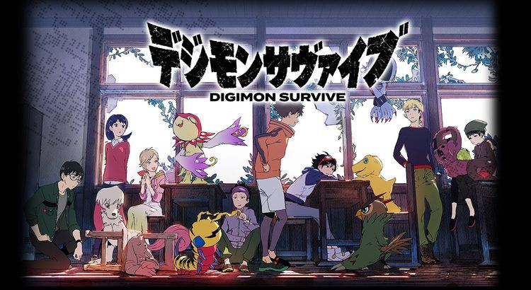
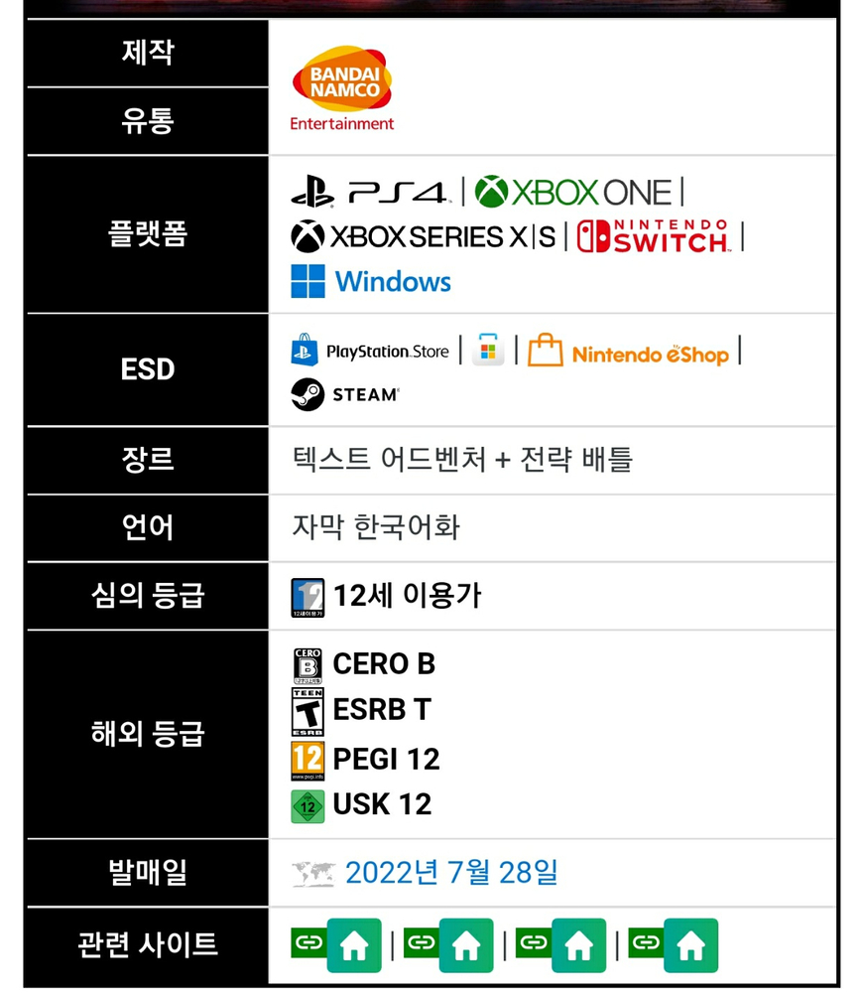
7월 28일 '디지몬 서바이브'가 출시예정입니다.
캠프에 참가한 주인공 일행은 별안간 이세계로 전송.
그 곳은 흉악한 생물이 배회하며 목숨의 위험이 있는 가혹한 세계.
생존을 건 모험의 막이 열린다!
(디지몬 어드벤처랑 매우 유사한 시작입니다.)
디지몬 서바이브는 디지몬 시리즈의 최신작으로 생존에 초점을 맞춘 게임입니다. 디지몬 시리즈 최초 생존 게임인 것 같습니다. 2D 일러스트의 캐릭터와 3D 형태의 맵을 조합한 비주얼과 으스스하고 현실적인 분위기 덕분에 많은 기대를 받았습니다. 2019년, 2021년에 계속 미뤄지더니 드디어 출시일이 공개됐습니다.
발표된 장르는 텍스트 어드벤처 + 전략 배틀.(풍화설월, 잔다르크같은 턴제 게임입니다.)
육성 가능 디지몬 종류는 113종.
포켓몬과 다르게 디지몬은 항상 어두운 면이 있었고 이번 서바이브는 20년 전 디지몬 어드벤처(찾아라 비밀의 열쇠) 느낌과 굉장히 유사하다고 합니다.
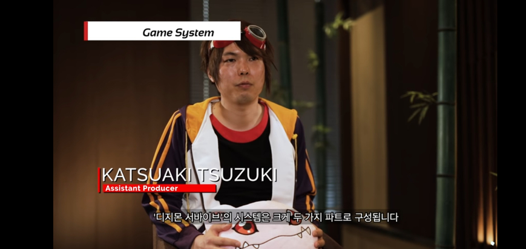
(태일이 실사화)
(아직도 모든 가사가 기억나는 노래.)
디지몬 시리즈 프로듀서인 하부 카즈마사는 디지몬 어드벤처가 15소년 표류기라면 디지몬 서바이브는 파리대왕이라는 트위터를 올렸습니다.(파리대왕은 윌리엄 골딩의 작품으로 노벨문학상을 수상한 명작 소설입니다. 벨제부브를 의미한다고 보시면 됩니다. 소년들이 섬에 표류하며 사회를 구성한 후 그 공동체가 인간 본성의 결함에 의해 무너지는 이야기입니다.제가 굉장히 좋아하는 소설입니다.)
즉 꿈도 희망도 없는 내용의 게임이 될 확률이 큽니다.ㅋㅋㅋ
ESRB 심의에 따르면 피로 물든 시체의 모습이 나온다고 합니다.
(1차 공식 한국어판 PV)
(프로듀서 인터뷰 영상)
(프롤로그 뮤비)
(한국어판 티저 트레일러)
(게임 QnA)
아래는 등장인물들입니다.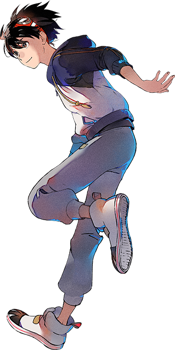
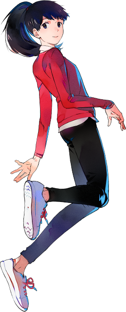
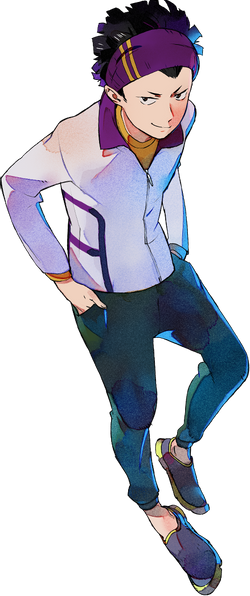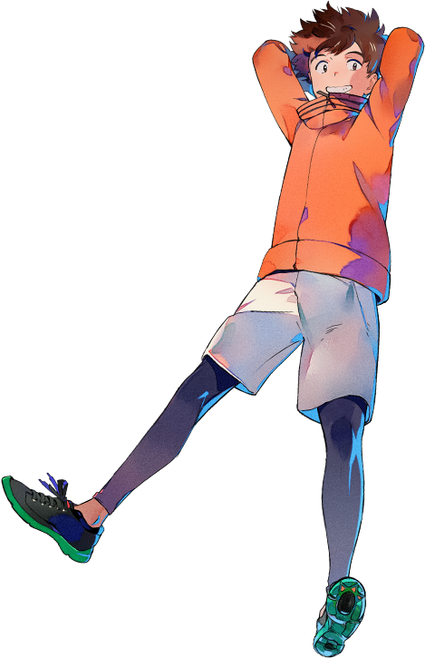
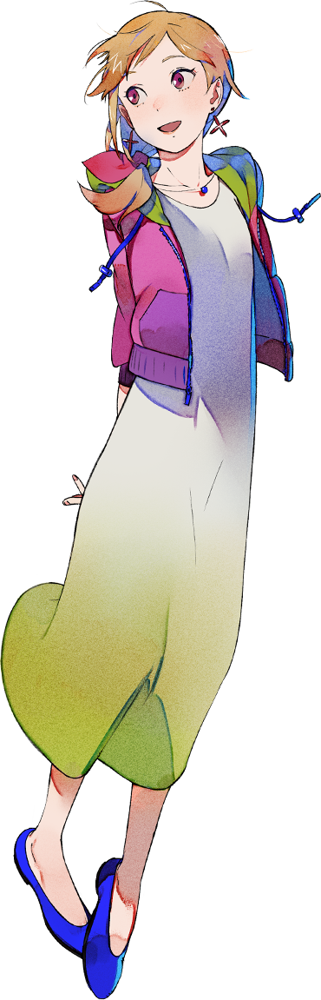
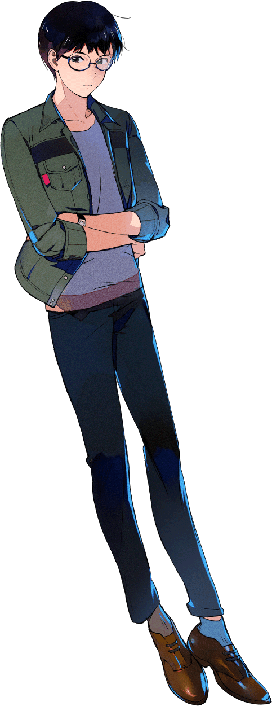
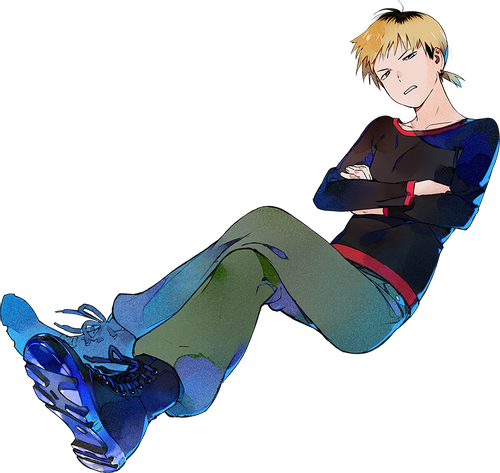
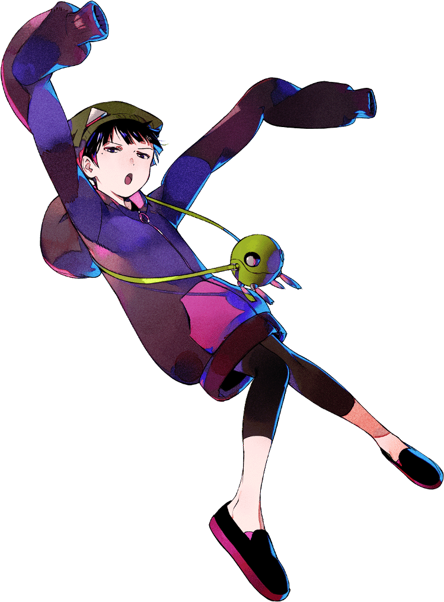
(역시 일러스트가 세련됐습니다.)
모두 중고생들이라 어드벤처보다는 훨씬 수위가 높은 게임이 될 것 같아서 기대중입니다.
그래서 7월 28일까지 존버탈 예정입니다.
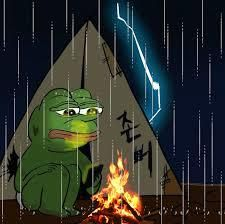
후원댓글 10개
댓글 10개 ▼